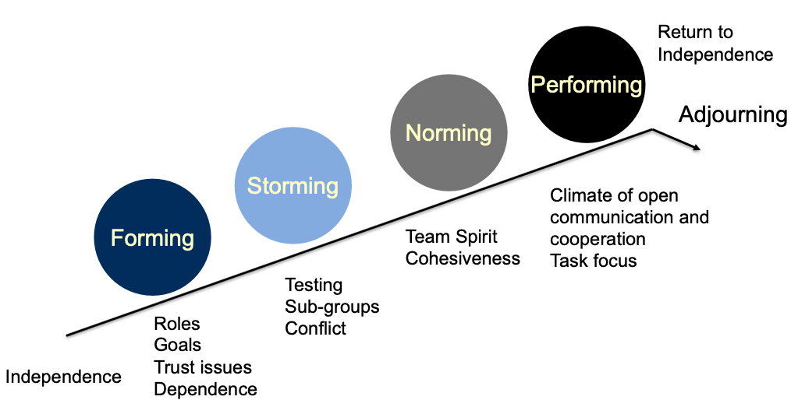

Teamとは
Contents
Teamとは¶
Group ではなく、Team を目指す¶
「複数人が集まって仕事をすれば、それはチームだ。」という人が多いかもしれない。しかし、それだけでは本質的な意味ではチームとは言えない。

Groupは単に共通の目的のために複数人で取り組んでいるだけ。Groupの主目的は、あくまで、情報共有である。
過去に私が所属した組織の中にも、今思えば「あれはTeamではなく、”Group”だったなあ…」と思うグループがある…。
そういう”Group”のリーダーやメンバーは組織行動学を知らない。まずは知って、意識することが大切である。
Team にはスキル補完やシナジーがある。Teamを目指さなければならない。Teamの主目的は、成果の最大化である。
リモートワークの時代では、シナジーを生み出すことがさらに難しくなっている。
Teamでいい成果を出すためには、初期の混乱や衝突が必須である¶
最初から成果を最大化できるチームはない。
TuchmanのFive Stage Model¶
チームビルディングの過程をモデル化したものである。
多様性のあるメンバーが集まると…
Forming Stage:
最初は混乱が生じる。各メンバーがチームの目的や役割の議論に集中する。
リーダーは主導権を握り、明確な期待と一貫した指示を与えるべきである。
Storming Stage:
衝突と確認を繰り返す。
リーダーは、問題を解決し、正常化する。
Norming Stage:
このチームでのルールができる。和解、安心感、不安感の低下、メンバーの参加と支持、結束力の向上。
リーダーには、個人やグループの努力を認めること、フィードバックなどの学習機会を与えることが求められる。
Performing Stage:
チームとして良い成果を出す。
リーダーの介入は最小限で良い。
Adjurning:
散会。チームとしてのタスクが終了する。

Teamのパフォーマンス向上は、時間に対して線形ではない¶
チーム結成から締め切りまで時間のうち、半分程度を過ぎると、やっとチームでの効率向上を実感できるようになる。

あくまでモデルだが、チーム結成時にうまくいかないのは当たり前だと知っていることが重要だと感じた。
「バネが高く跳ぶには、縮むことが必要」というのと近い。これは比喩だが、実験的にも正しいことをGersickは示している。
Source: 以下の内容をもとに作成した。
Gersick, C. J. (1988). Time and transition in work teams: Toward a new model of group development. Academy of Management journal, 31(1), 9-41.